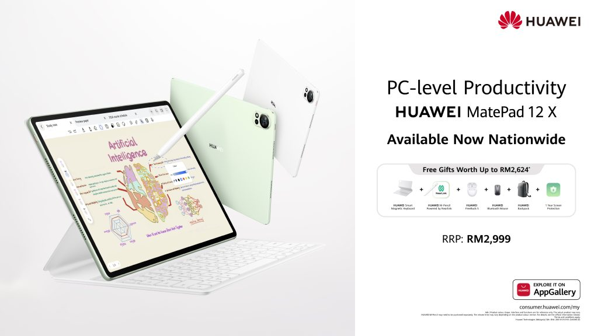

Be amazed by the power, elegance, and innovation packed into a sleek 12-inch tablet. With unparalleled performance and a vibrant display, this is the device you’ve been waiting for.
Unleash your creativity, enhance productivity, and redefine entertainment with cutting-edge features:
Discover the exceptional highlights of the Huawei MatePad 12 X:
Explore the exceptional features of the Huawei MatePad 12 X:
12 inches IPS TFT, 2800 x 1840 pixels, 1000 nits peak brightness, 144 Hz refresh rate
270 x 183 x 5.9 mm, 555 g
10,100 mAh, 66W SuperCharge (50% in 30 mins), Up to 14 hours video playback
Kirin T90A, Octa-core CPU
8 GB or 12 GB RAM, 256 GB storage
13 MP (f/1.8) with LED flash, 8 MP ultra-wide (f/2.2), 4K video recording (30fps)
8 MP (f/2.2), 1080p video recording (30fps)
HarmonyOS 4.2
Bluetooth 5.2, Wi-Fi (2.4 GHz & 5 GHz), USB Type-C, USB 3.1 Gen 1
Don’t miss out on the chance to elevate your digital experience! Visit the website today to learn more about the HUAWEI MatePad 12 X and take advantage of exclusive offers. Experience the future of productivity—order yours now!